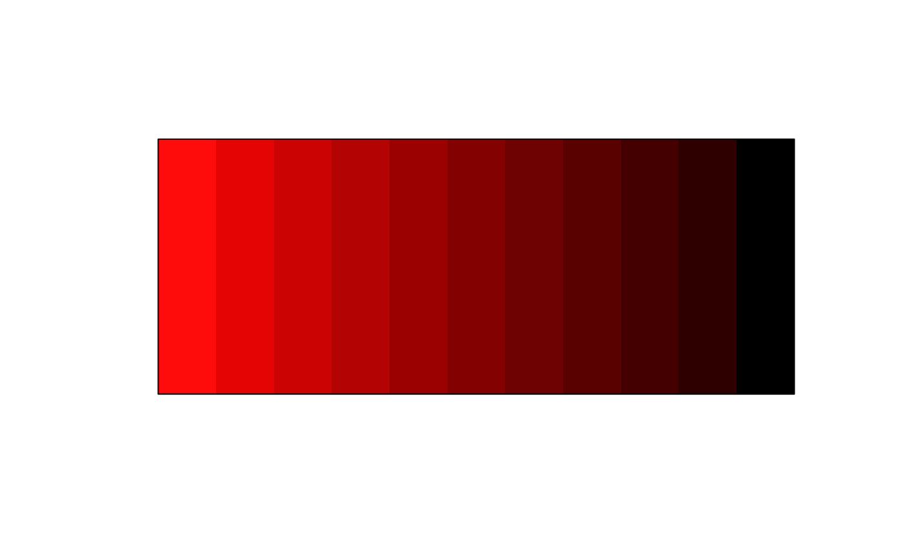
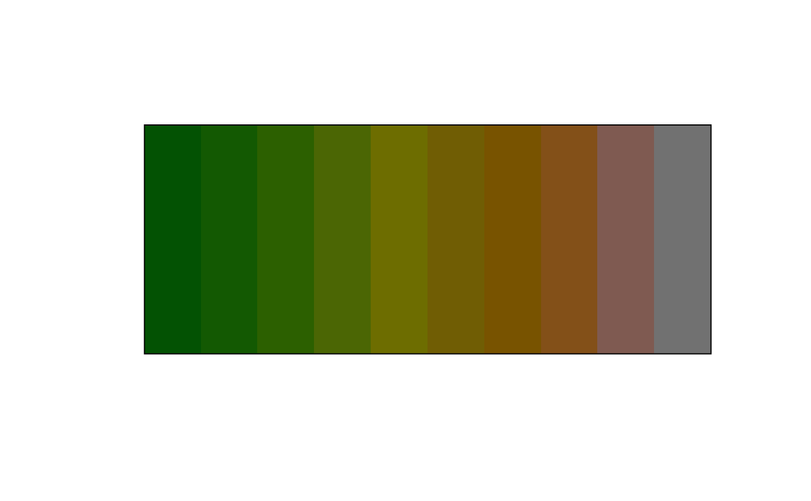

Make a color more dark
clr_darken(col, shift = 0.5, space = c("HCL", "HSL", "combined"))| col | a color object or vector of any of the three kinds of R color specifications, i.e., either a color name (as listed by colors()), a hexadecimal string of the form "#rrggbb" or "#rrggbbaa" (see rgb), or a positive integer i meaning palette()[i]. |
|---|---|
| shift | Numeric between 0 and 1, 0 will do zero darkening, 1 will do complete darkening turning the color to black. Defaults to 0.5. |
| space | character string specifying the color space in which adjustment happens. Can be either "HCL", "HSL" or "combined". Defaults to "HCL". |
The colors will be transformed to HSL color space (hue, saturation,
lightness) where the lightness of the color will be modified. The lightness
of a color takes a value between 0 and 1, with 0 being black and 1 being
white. The shift argument takes a value between 0 and 1, where 0
means that the lightness stays unchanged and 1 means completely black. As an
example, if the lightness of the color is 0.6 and shift is 0.5, then the
lightness be set to the halfway point between 0.6 and 0, which is 0.3.
If space = "HSL" then the colors are transformed to HSL space where the lightness value L is adjusted. If space = "HCL" then the colors are transformed to Cylindrical HCL space where the luminance value L is adjusted. If space = "combined" then the colors are transformed into HSL and Cylindrical HCL space. Where the color adjusting is happening HLS is copied to the values in the HCL transformation. Thus the "combined" transformation adjusts the luminance in HCL space and chroma in HSL space. For more information regarding use of color spaces, please refer to the colorspace paper https://arxiv.org/abs/1903.06490.
# Using linear shift
plot(clr_darken(rep("red", 11), shift = seq(0, 1, 0.1)))

plot(clr_darken(rep("red", 11), shift = seq(0, 1, 0.1), space = "HSL"))
plot(clr_darken(rep("red", 11), shift = seq(0, 1, 0.1), space = "combined"))
plot(clr_darken(terrain.colors(10)))

# Using exponential shifts
plot(clr_darken(rep("red", 11), shift = log(seq(1, exp(1), length.out = 11))))